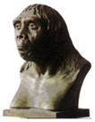
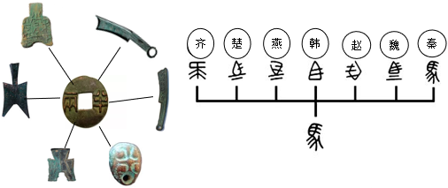
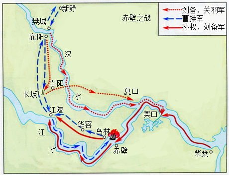

2018年北京市中考历史试题 · 选择题 第1、2、3、4、5题
1．（3分）考古工作者制作完成“北京人头部复原像”（见图）的主要依据（ ）

A．周口店的自然环境B．遗址中的打制石器
C．北京人头盖骨化石D．北京人生活想象图
2．（3分）它上承原始刻绘符号，后启青铜铭文，现代汉字由它演变而来。材料中的“它”是（ ）
A．甲骨文B．金文C．小篆D．隶书
3．（3分）周灭商以后，封黄帝后代于蓟，蓟城在今西城区广安门一带：封周王室贵族于燕，燕都在今房山区琉璃河镇。材料反映的政治制度是（ ）
A．禅让制B．分封制C．郡县制D．行省制
4．（3分）对如图示意图解读正确的是（ ）

A．春秋时期的诸侯争霸B．战国时期的百家争鸣
C．秦朝建立后巩固统一D．汉武帝加强中央集权
5．（3分）如图所示，地图反映的历史事件的影响是（ ）

A．为曹操统一北方奠定基础
B．为三国鼎立形成奠定基础
C．三国鼎立的局面正式形成
D．最终结束三国鼎立的局面